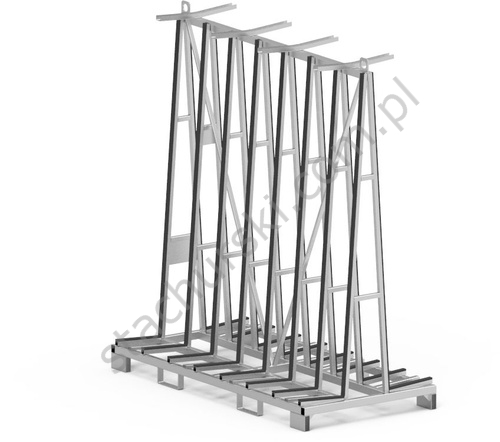
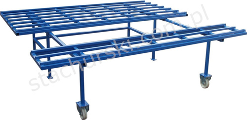
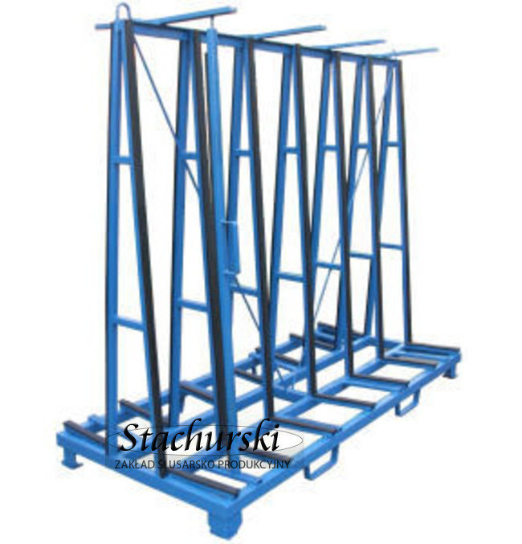
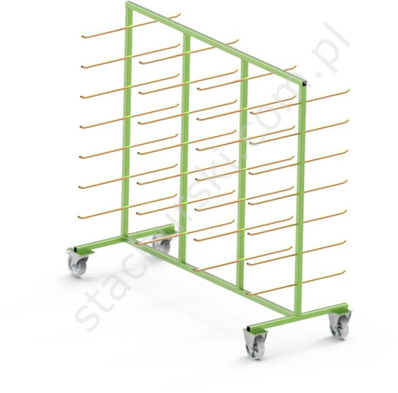
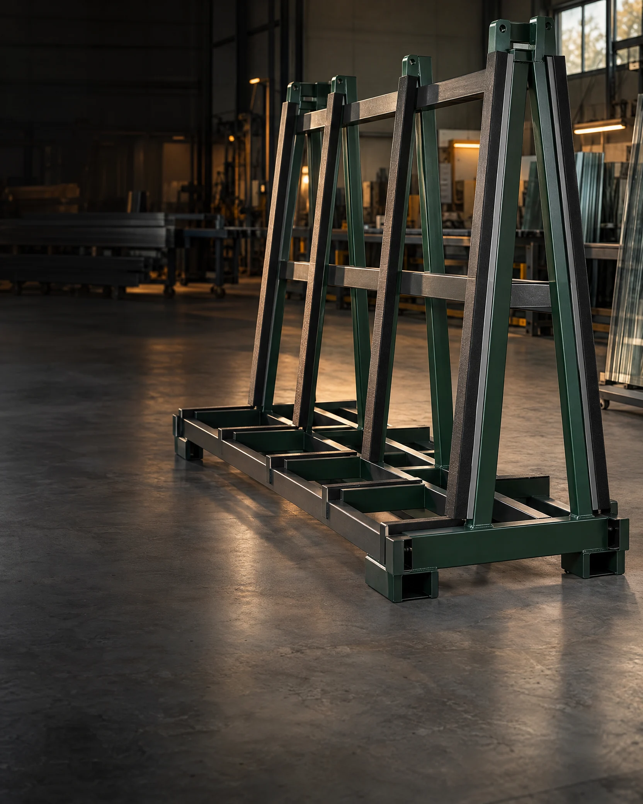

STEP 01
YOUR WORKFLOWTell us the job
What do you need to store, transport or support? Start with the work at hand.

01 / GLASS RACK
02 / WORKSHOP FLOW
03 / BUILT TO WORK
04 / MADE IN POLANDPurpose-built racks, trolleys and steelwork for the people who make, move and fit glass.
Choose an established model, or talk to our team about adapting a solution to your operation.
What do you need to store, transport or support? Start with the work at hand.
Browse tried-and-tested equipment or discuss the dimensions and details you need.
We build steelwork with practical experience and attention to the application.
Put dependable storage and handling equipment into your day-to-day workflow.
Find the equipment by what you need it to do. Clear product families make it easier to get to the right conversation.
Not sure where to start? ↗No exact matches. Ask us and we’ll help you find the right range.

STA-TS is a storage and transport rack for flat glass. Practical standard features support everyday handling, with dimensions and finish adaptable on request.
Stachurski is a family-run metalworking business in Kamienna, Poland. For decades, we have been making equipment for the glass and window industry—and taking on made-to-order steelwork shaped around customers’ needs.
Get to know our workshop ↗Tell us what you need to move, store or make. We'll get back to you with a practical next step.